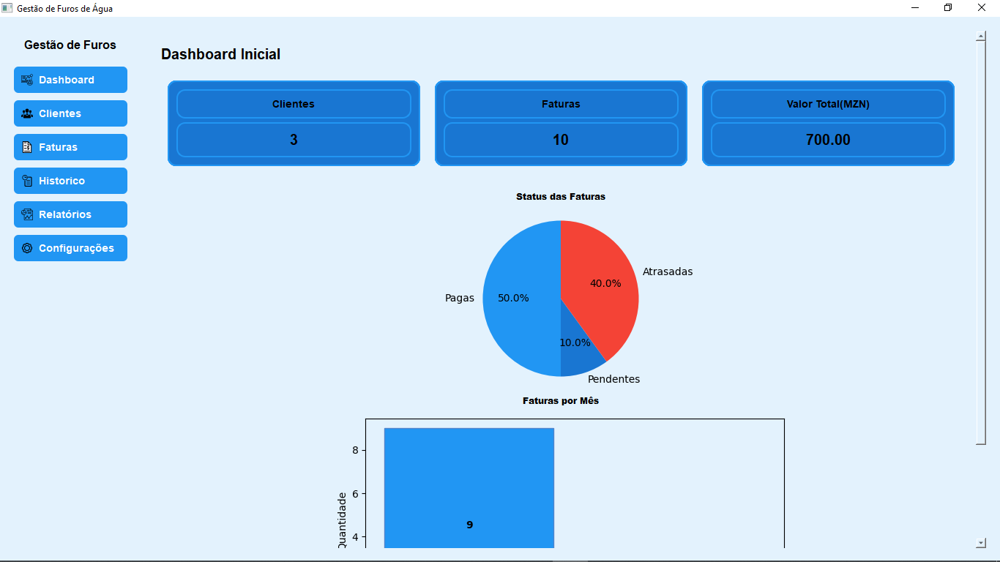

Pare de perder dinheiro com folhas de papel e faturas atrasadas. Um sistema moderno, local e seguro para gerir clientes, leituras de contadores e gerar faturas automáticas em PDF.
Para Windows (Funciona 100% Offline)
Instalação rápida

Desenhado para ser simples. Não precisa de conhecimentos avançados de informática para faturar como uma grande empresa.
Com o logótipo da sua empresa, cálculos matemáticos exatos e inclusão da sua conta M-Pesa ou bancária no rodapé para pagamentos diretos.
Veja todos os seus pontos de fornecimento num mapa interativo. Ideal para planear rotas de cobrança de forma eficiente.
A sua base de dados está segura e offline. Com um clique, guarde cópias na sua Pen Drive para nunca perder o registo de uma dívida.
Não. O sistema funciona 100% offline. Apenas precisa de internet caso decida enviar os relatórios por email ou WhatsApp aos seus clientes.
O sistema possui uma ferramenta de Backup com 1-clique. Pode guardar toda a sua informação numa Pen Drive no final do dia e restaurá-la facilmente noutro computador.
Sim! Nas configurações do sistema, pode definir os dados da sua conta bancária ou M-Pesa. Essa informação sairá automaticamente impressa no rodapé de todas as faturas geradas em PDF.
Instale o software e insira as suas primeiras faturas de forma totalmente gratuita. Quando o sistema lhe provar o seu valor e quiser expandir, a licença completa custa apenas 1.500 MZN / mês.
Começar a Faturar Agora